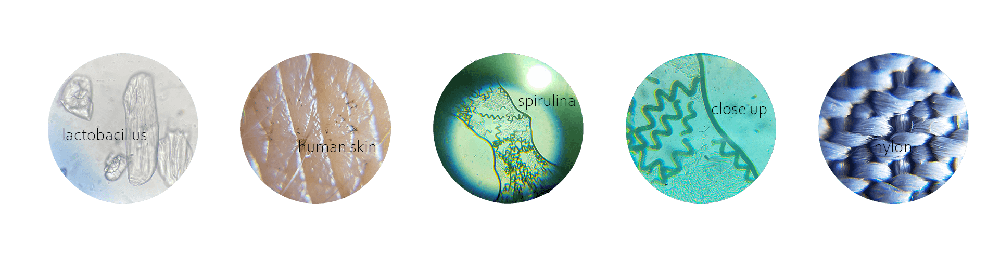
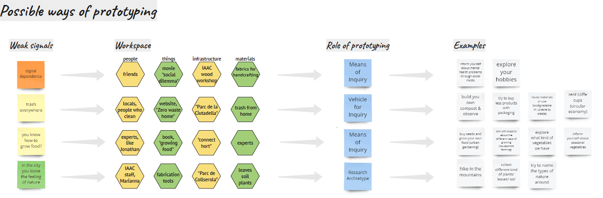
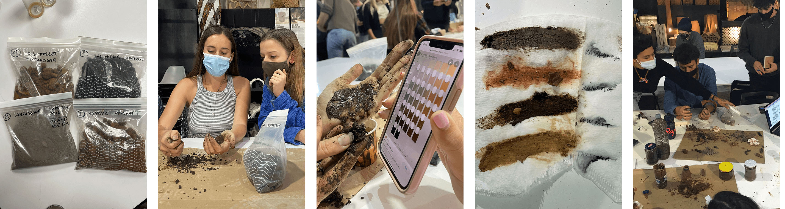

term 1
bio&agri Zero
microscope
The first week was about biology and chemistry. We received a big amount of information and have done different studies and tests. With various of microscopes we learned how to use them and how to find the bacteria, which you can see in the round pictures. Sometimes it took a while to locate them. Also we create a medium or bioplastic (sugar, distilled water, yeast and vinegar) where each student distribute two different swaps of bacteria’s, which we could find at IAAC. First we mixed the ingredients together and then we sterilised our containers with the mixtures inside. Then we filled them into petri bowls and let and heat them with a gas burner and let them cool down. In the next day we swipe the two chosen bacteria on the medium. First I wanted to check our water filter tank at IAAC to see how many bacterias there are, because we use it everyday and nobody is cleaning their bottles before. For the second part I choose my banana skin to see how bio-materials produce bacteria. Then we put our petri bowls into an incubator which shows 36 degrees.
We should think about which type of smear produces more bacteria: “I would imagine that there are the same amount of bacteria, because bacteria do not last as long on plastic as they do on natural surfaces. The samples were taken in the morning after some people had already filled up their bottle. The plastic surface is hard and not porous, so the bacteria don't stay as long.” And I was right, maybe also because IAAC disinfected the water tank in the morning, we don’t know.
kambusha
We started to make our own Kombusha-drink. Therefore Nuria (our teacher for the week) gives everybody of us a part of her scooby, which she made by letting her bought Kambucha “grow”. Our own little scooby we put in a box and add strong concentrated black tee. We took it home and let the lid open. Unfortunately my scoopy got infected because I didn’t put something on the pot so all the bad bacterias went inside.
spirulina
Also they showed us to create our own Spirulina, which should be really healthy because it includes various of vitamins for the health of your body. Spirulina is a cyanobacterium, which includes plant compounds, copper, iron, manganese, potassium, B vitamins and iodine.
experiments
I have done two experiments. First on I bought different kind of vegetables seeds and planted them on our balcony to see the different between BIO and non-BIO seeds and if its possible to grow them in autumn in Spain. I realised that BIO seeds grow much better. Compared to non-BIO seeds, almost out of every seed came a small plant.
My second experiment was to produce my own homemade bioplastic. Therefore I bought vinegar, yeast, filtered water without chlorine and glycerine. It worked quite well! First I mixed everything together and already at the beginning I could see that the mixture reacts. I cooked it and after a few minutes the mixture got more sticky. Then I distribute the mixture on a backing paper and let it try for a couple of hours. In the end i realised its quiet easy to produce your own bioplastic at home, you just need to know what texture you want. My bioplastic was very flexible.
personal
This week i reflect how I live here in Barcelona. Our flat in the district “Gotic” is at the top of the building, that’s why the walls are low. The flat is quiet small, but we have a private rooftop which is much bigger that the flat itself. That’s the reason why I am the most of the time outside. It feels like living in a tiny house. I recognized that In my freetime I spend less time being at my phone or watching tv, because of the small flat I always want to be outside and outside you can not really good see the display. Because of the different social media areas where are spending much time in fake digital worlds, which are far away from the origin of the mother earth. In this week I learned that its important also to explore what plants and animals are “designing” and copy it. On the terrace I growed a lot different kind of vegetables (with BIO-seeds from Barcelona), read and build furniture and do sport exercises. Because of the climate in spain the vegetables grow much faster than in Germany. Here I can not have a bike that’s why I walk everywhere I need to go and explore the city and surroundings even more. I recognised in Barcelona are not many parcs, gardens (like urban gardens) or grass-areas. You feel not very connected to the nature. In this week we also learned that blockchain and different kind of digital activities need a lot of energy which is not good for the environment., but still less than other areas. Sustainabilty is often treated in richer countries as they have "no" other concerns but they also have the biggest negative impact on global warming. Also this week I realised that racism is still everywhere and plentiful, it doesn’t matter which country you are.
research through design
On Monday, we started with a design studio about research through design and prototyping. Its nice to see the different types of prototyping and how you can do research while designing. So not the research and also not the design need to come first. The most time I was thinking about the same prototype: making a product and try it, but now I realise there are different ways and each is helping for another reason.
personal laboratory
18.10.2021
soil testing
The second week was about agriculture. We were told about an app to discover new plants, while taking pictures of the plants and the app display the names. Also we conduct different kind of experiments with four types of soil from “Valldaura”. We tested the soil in firmness and the colour was also closely examined to determine which type of soil it corresponds to: The soil that resembled clay the most was smoother and the other had more small stones. Also we tested how much nutrid is in the soil: the compost soil had the most phosphate and nutrid of all the different types. We checked also the PH-value (1-14): the compost soil for example had 6-7 (so it´s in the middle, when it gets higher it is basic, when it is lower it is acid/acid).
personal
The agriculture week I was the second time at “Connecthort” in Barcelona for the volunteering projects. There we are building a nature house out of different kind of materials, like stro straw, clay, sand, water and bamboo sticks. It helped me learning about new materials, handwork and connect with interesting people from Barcelona. I realised that for future design you have to have a lot of general knowledge and recognise apply innovations. That’s why I want to define problems properly, problems from the past are still not solved, they need to be clarified and solved/addressed. For example insects are threatened with extinction and especially bees are really important for the life on our planet. I have realised I don't want to convince someone or say how to live, because accusations are not helping for more sustainability. I want to be sustainable for myself but accept how others live their lives! We are all only human.
parfume making
For producing perfume we first collect a big amount of branches with leaves. Then we separate all the leaves from the branches to put them into the zinc cylinder. So we start heating up the whole device and closed all open gaps to avoid the heat is getting out. Then we need to wait a couple of time until the device shows around 40 degrees. The heat created a lot of humidity and water vapour in the big device which went though a hose. In the next part we needed to fill the second container with ice-cubes, so the hose go´s though the ice-water. Its important that the emerging water vapour gets thought hot and cold temperature ranges. In the end the water comes out of the hose with a little bid of oil, which is the actual high concentrated perfume oil.
Making a mutant
Problem: Jonathan and Nuria gave us the task to experiment with genetic manipulation and mutants, we were supposed to think of a problem and tackle it by genetic modification. The last few years I have been working a lot on how to grow my own vegetables, how to grow my own food without pesticides and in a moderate amount of time. I have found that it takes a lot of time and energy. With a lot of rain and sun, not only do the seeds grow into plants, but also the weeds, which you can't distinguish well at the beginning. With a certain size of cultivation area for self-sufficiency, it is not easy to recognise every weed correctly and to remove them in time, because these roots take away the space for the plants under the soil and also the space to spread above the soil. Also, it often happens that the right plants are pulled out by mistake, because they resemble the weeds because they have similar leaves. There are also different diseases and insects that attack the vegetable plants, such as slugs, potato beetles and fungus gnats.

Idea: Change a bid the colour of the vegetable seeds/plants so you can see the difference between weeds and the right plants directly. Also give the plants Immune proteins that prevent disease and make plant roots strong so they are not eaten by weed roots. DNA is the basic building block of plants, i.e. the structure of organisms, and controls many biochemical processes. Errors can trigger diseases and immune deficiencies. Crisper cas9 can be used to change the DNA. CRISPR is used to cut DNA at any point. The Cas9 protein carries a short gene sequence (RNA) around with it, which can be assigned the appropriate piece. When the DNA finds this matching gene sequence, it is cut, which means that something can be separated at a certain point in the genetic material.
Implementation: In order to make the plants more resistant and to adapt their colour, a specific gene sequence (RNA) must be created. This gene sequence is to contain a protein (IgE immunoglobin E) and thus becomes the amino acid sequence or nucleotide sequence that strengthens the immune system. The second protein (containing the dye astra blue) colours the leaves bluish so that they can be distinguished from the green weed leaves.
Conclusion: With the help of CRISPR, the plants can be coloured and strengthened so that they can be better distinguished from the weeds, have a better immune system against diseases and are more resistant.
Scientific paper
Biohacking: This paper is about biohacking, examples and privacy rules. Biohacking is for merging body modification with technology. Biohackers like trying things like cybernetic exploration, personal data acquisition, advocating for privacy rights and open-source medicine. There are new sectors such as software developers who are involved in the "quantified self-movement" and aim to lead healthier lifestyles, as well as improve body performance. But this also results in problems of security and cultural values.
Transhumanism: Transhumanism plays an important role in this, which means the development of humans through the use of technologies, such as the possibility of experimenting with implantable technologies. So biohackers started to chip themselves and interact with computers like the "IoT". There is the possibility of modifying bodies and sharing the experience to provide open-source medicine. One of the first attempts was by Kevin Warwick who implanted himself an RFID tag. The second experiment involved implanting a multi-electrode array in Warwick's arm to create a neural interface that would allow control of a robotic arm and the establishment of a telepathy system with another human implant over the internet. Well-known transhumanism personalities: Amal Graafstra (tagger), Tim Cannon, Lepht Anonymous, and Neil Harbisson and so on make implants or implant themselves for human-electronic device communication and self-quantification, and cosmetic enhancement. The biohacking community stands for open protocols, i.e. knowledge for all and the sharing of experiences and device designs on the internet.
Implanted Technologies: Implants can be inserted through needles or a surgical incision. They often have a layer/capsule that reduces the immune response, this process is called bioproffing. Implants can be inserted through needles or a surgical incision. They often have a layer/capsule that reduces the immune response, this process is called bioproffing. There are currently about four different implants. Nedymium magnets, RFID/NFC. chips, light sources and sensors. The neodymium magnets (example photos: A and B) are inspired by magnetoreceptors used by animals such as bats. They sense electromagnetic forces through tactile sensation. They are subdermal implants. RFID/NFC chips (example photos: C und D) usually work with embedded batteries and often have a Bluetooth part that is responsible for the connection to the "IoT" or can be retrieved on command. There are also “FDA”-approved RFID chips from the company “PositiveID” that can be used to capture biometric data. This implant includes a capacitor, antenna, circuitry for detecting emergency situations of unconscious patients. Light sources (example photos: E and F) are often used for optical materials for cosmetic purposes. It works by the decay of tritium gas which emits b-particles, this effect with phosphorus emits protons and produces radioluminescence. Biohackers in the grindhouse wetware have implanted themselves with optical devices that include light diodes, batteries and magnetic active switches. Implanted sensors (G), such as temperature sensors, were formerly used for veterinary medicine, also called "Destron Fearing". The sensors have an anti-migration coating, also called a bioband. The temperature sensors are usually implanted near the armpit. The temperature data is sent to the computer via the Blootooth connection. They can also be used to measure other physical and biochemical parameters such as pressure.
SCI-HUB ARTICLESafety Implications: Very good sterilisation is very important. Implants with an anti-migration coating, such as biobond, are bonded to subcutaneous tissue to prevent migration in the body. This tissue contains a porous polypropylene coating that promotes the growth of fibrocytes and collagen fibres. Non-biocompatible neodymium cores can be rejected or encapsulated. Therefore, it is dangerous when biohackers exchange these implants among themselves because they may contain microorganisms. Long-term studies and the biocompatibility of electrical and optical implants are still unclear, only in rats has it been found to cause sarcomas.
Privacy concerns: Currently, there is a high increase in data surveillance which includes, for example, geotagging of a person. For example, in 2017 a person was arrested. They were able to use his pacemaker as evidence for arson. State authorities could use it to get information and justify security reasons. Meanwhile, there are already codes for protection against stigmatisation, social discrimination or loss of health regulation. This is the rise of open medicine, which allows cryptography for storing medical data, so biohackers should be supported more.